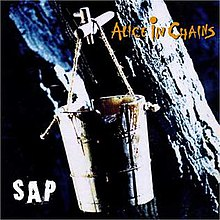
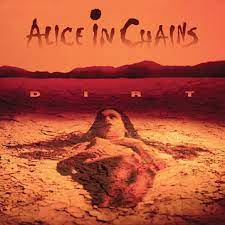
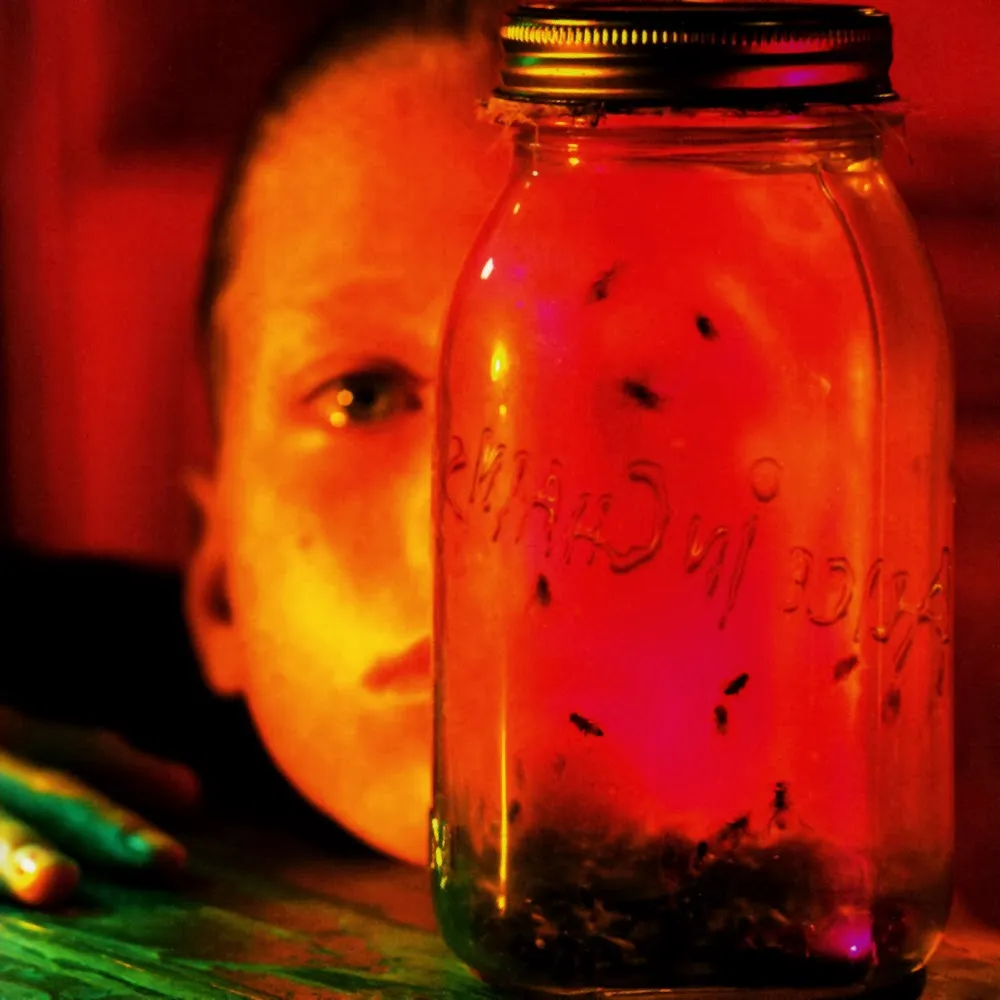

Facelift es el álbum de estudio debut de Alice in Chains, lanzado por Columbia Records el 28 de agosto de 1990. Los temas " We Die Young " y " Man in the Box " fueron lanzados como sencillos. "Man in the Box" fue nominado a un premio Grammy a la mejor interpretación de Hard Rock con voz en 1992. Facelift se convirtió en el primer álbum de grunge en obtener la certificación de oro de la Recording Industry Association of America, logrando esta hazaña en 11 de septiembre de 1991. El álbum alcanzó el puesto 42 en la lista Billboard 200 , y ha sido certificado triple platino por la RIAA por envíos de tres millones de copias en los Estados Unidos.
En una entrevista con Video Metal Sheet en 1991, Jerry Cantrell dijo que la idea original para la portada del álbum era "algo de tipo embrionario" que representaba el nacimiento de la banda. Pero terminó tomando un tono más aterrador y encajando bastante bien con la música. Cantrell tambien declaró que el álbum tenía la intención de tener un "aura de mal humor" que fuera un "resultado directo de la atmósfera y la sensación inquietantes de Seattle". Con respecto a la música de " Man in the Box ", Jerry dijo: "Todo ese ritmo y rutina fue cuando empezamos a encontrarnos a nosotros mismos; ayudó a Alice a convertirse en lo que era".
Cantrell también le dio crédito a "I Can't Remember" por ayudar a la banda a encontrar su sonido. "It Ain't Like That" surgió de un riff que Cantrell citó como un error, sin embargo, lo llamó "un error genial".
Cantrell llamó a "Love, Hate, Love" la "obra maestra de ese disco", y agregó sobre la canción que la voz de Staley es "increíble" y que presenta uno de sus solos de guitarra favoritos que jamás haya interpretado.
En cuanto al contenido lírico, Cantrell dijo que escribió " We Die Young " después de "viajar en autobús al ensayo y ver a todos estos niños de 9, 10, 11 años con buscapersonas traficando drogas. La vista de un niño de 10 años con un Un buscapersonas y un teléfono móvil que traficaba drogas equivalían para mí a "We Die Young". En una entrevista grabada con MuchMusic USA , el vocalista Layne Staley declaró que la letra de "Man in the Box" trata sobre la censura en los medios de comunicación, y "quedé realmente drogado cuando la escribí"
Canciones Facelift
SAP

Sap es el primer EP de estudio de la banda de rock estadounidense Alice in Chains , lanzado el 4 de febrero de 1992 a través de Columbia Records. Sap es principalmente acústico y marca la primera vez que el guitarrista Jerry Cantrell canta como voz principal en un lanzamiento de Alice in Chains, con la canción "Brother". El EP fue producido por Alice in Chains y Rick Parashar y cuenta con las voces invitadas de Ann Wilson de la banda Heart , Chris Cornell de Soundgarden y Mark Arm de Mudhoney . La canción "Got Me Wrong" se convirtió en un éxito dos años más tarde después de aparecer en la banda sonora de la película Clerks de 1994. El 14 de enero de 1994, Sap obtuvo la certificación oro de la RIAA por la venta de más de 500.000 copias.
Después de la gira de Facelift, Alice in Chains entró al estudio para grabar una canción para la película Singles de Cameron Crowe, pero decidió aprovechar el compromiso. Como recordó el guitarrista Jerry Cantrell: "Entonces, en la sesión que estaba destinada a grabar esa canción, terminamos haciendo demostraciones de unas 10 canciones, que incluían todo el material que terminó en el EP "Sap", "Rooster" y un par de otros de "Dirt" ”.
En cuanto al contenido lírico, Cantrell dijo que escribió "Brother" sobre su relación con su hermano menor. La canción se refiere específicamente al período posterior al divorcio de los padres de Cantrell, cuando su hermano menor se fue a vivir con su padre mientras él se quedaba con su madre, y Cantrell dijo que la canción "era una forma de intentar construir un puente". Al comentar sobre "Got Me Wrong", Cantrell dijo que escribió la canción sobre una relación en la que una persona cree que puede cambiar a la otra, y agregó que la canción habla de "las diferentes formas en que hombres y mujeres se ven entre sí"
Canciones sap
Dirt

Dirt es el segundo álbum de estudio del grupo. Fue lanzado el 29 de septiembre de 1992 por Columbia Records. Alcanzando el puesto número 6 en la lista Billboard 200, el álbum recibió elogios de la crítica. Desde entonces, ha sido certificado quíntuple platino por la Recording Industry Association of America, lo que convierte a Dirt en el álbum más vendido de la banda hasta la fecha. Fue el último álbum de la banda grabado con los cuatro miembros originales, ya que el bajista Mike Starr fue despedido en enero de 1993 durante la gira para promocionar el álbum. El álbum generó cinco sencillos: "Whould?", "Them Bones", "Angry Chair", "Rooster" y "Down in a Hole", todos acompañados de vídeos musicales. Dirt fue nominado a un premio Grammy a la mejor interpretación de Hard Rock. El vídeo musical de "Would?" Fue nominado a un premio MTV Video Music Award al mejor vídeo de una película, ya que la canción apareció en la banda sonora de la película Singles de Cameron Crowe de 1992.
Las letras del álbum presentan temas oscuros, centrándose principalmente en la depresión, el dolor, la ira, el comportamiento antisocial, las relaciones, la adicción a las drogas, la guerra, la muerte y otros temas cargados de emociones. La mayor parte de la música del álbum fue escrita por Jerry, pero por primera vez Layne Staley escribió dos canciones él mismo: "Hate to Feel" y "Angry Chair", ambas con Staley en la guitarra.
Con canciones escritas principalmente en la carretera, el material es más oscuro que Facelift . "Hicimos un gran examen de conciencia en este álbum. Hay muchos sentimientos intensos". Cantrell dijo: "Nos ocupamos de nuestros demonios diarios a través de la música. Todo el veneno que se acumula durante el día lo limpiamos cuando tocamos". El uso de drogas estuvo al frente y al centro como tema lírico en el álbum. Tres pistas ("Sickman", "Junkhead" y "God Smack") hacen referencia específica al uso de heroína y sus efectos.
Staley expresó su arrepentimiento por el contenido lírico de algunas canciones de Dirt , explicando: "Escribí sobre drogas, y no pensé que estaba siendo inseguro o descuidado al escribir sobre ellas... No quería que mis fans pensaran que la heroína era genial. Pero luego algunos fans se me acercaron y me dieron el visto bueno, diciéndome que estaban colocados. Eso es exactamente lo que no quería que sucediera".
La portada del álbum presenta a una mujer desnuda medio enterrada en un paisaje desértico agrietado. La portada fue fotografiada por Rocky Schenck, quien creó la imagen junto con la directora de arte del álbum, Mary Maurer. La portada fue conceptualizada por la banda, con la mujer viva o muerta. La banda discutió el tipo de mujer que querían y Schenck comenzó a elegir el casting poco después. Schenck envió una foto de la modelo y actriz Mariah O'Brien y la banda la eligió.
Canciones Dirt
Jar of flies

Jar of Flies es el segundo EP de estudio de la banda de rock estadounidense Alice in Chains. Fue lanzado el 25 de enero de 1994 por Columbia Records. Fue el primer EP en la historia de la música en debutar en el número 1 de la lista Billboard 200, con ventas en la primera semana que superaron las 141.000 copias en los Estados Unidos. El disco de producción propia fue escrito y grabado en el transcurso de solo una semana en el London Bridge Studio en Seattle. Los temas "No Excuses", "I Stay Away" y "Don't Follow" fueron lanzados como sencillos para promocionar el EP. Jar of Flies fue nominado a dos premios Grammy en 1995: Mejor paquete de grabación y Mejor interpretación de Hard Rock por "I Stay Away".
El EP fue bien recibido por la crítica y ha sido certificado cuádruple platino por la Recording Industry Association of America, lo que convierte a Jar of Flies en uno de los lanzamientos más exitosos de la banda. En Canadá, Jar of Flies obtuvo la certificación doble platino por ventas de 200.000 copias. En el Reino Unido, el álbum obtuvo la certificación plata después de vender allí 60.000 copias.
Después de la extensa gira mundial de Alice in Chains en 1993 para Dirt, el bajista Mike Starr fue despedido durante la gira por su consumo de drogas y el bajista de Ozzy Osbourne , Mike Inez, termino uniéndose a la banda, los miembros regresaron a Seattle después del final de su gira Lollapalooza y fueron desalojados de su residencia por no pagar el alquiler. Sin hogar, la banda se mudó al London Bridge Studio en Seattle.
La primera sesión tuvo lugar el 7 de septiembre de 1993. Layne dijo que la banda "sólo quería ir al estudio por unos días con nuestras guitarras acústicas y ver qué pasaba. Realmente nunca planeamos la música que hicimos". en ese momento para ser lanzado. Pero el sello discográfico lo escuchó y realmente les gustó. Para nosotros, fue simplemente la experiencia de cuatro chicos reuniéndose en el estudio y haciendo algo de música". Las sesiones del álbum duraron entre 14 y 18 horas al día y la grabación se completó en siete días. El ingeniero asistente Jonathan Plum describió las sesiones como "exhaustivas". El álbum fue grabado en cinta en una consola de mezclas Neve 80-68 porque Wright quería que el sonido acústico del álbum fuera lo más natural posible. Staley ordenó que no se utilizara Pro Tools dentro del estudio; Como explicó Wright, "Layne tenía un conocimiento práctico de sus preferencias sonoras en el estudio y sintió que lo analógico sonaba mejor para el sonido de la banda". Las pistas del álbum se grabaron en su mayoría en una o dos tomas.
Debido al predominio de los instrumentos acústicos en Jar of Flies , el álbum a menudo se considera una continuación del sonido adoptado por la banda en el EP Sap de 1992 . El álbum demuestra el amplio rango de la banda al ofrecer una variedad de pistas con una textura acústica, con elementos de blues rock y jangle pop. Steve Huey de AllMusic enfatizó que "el estado de ánimo sigue siendo irremediablemente sombrío, pero el tono conmovedor e introspectivo produce una sensación de aceptación que en realidad es relajante, en una especie de forma fúnebre. Los arreglos de Jerry Cantrell siguen volviéndose más detallados y en capas; mientras hay algunos momentos ruidosos, la mayor parte de Jar of Flies está bañada en un ambiente limpio y brillante cuyo origen es difícil de precisar".
Canciones Jar of flies
Alice In Chains
Alice in Chains, tambien llamado informalmente The Dog Album y Tripod, es su tercer álbum de estudio. Fue lanzado el 7 de noviembre de 1995 por Columbia Records y fue la continuación del exitoso "Dirt". Este es el primer álbum de estudio de larga duración de la banda que presenta al bajista Mike Inez y su último álbum de estudio que presenta al vocalista principal original Layne Staley antes de su muerte en 2002. También es su último álbum de estudio que se lanzará a través de Columbia. Al igual que con sus lanzamientos anteriores, las canciones del álbum se centran en un gran contenido emocional y temas como la adicción a las drogas, la depresión, la religión, las relaciones rotas y las tensiones internas dentro de la banda alimentadas por el abuso de sustancias de Staley. La música del álbum se basa menos en riffs metálicos y más en melodías y arreglos de texturas variadas, integrando algunos de los estados de ánimo acústicos más delicados de sus EP.
Alice in Chains debutó en el número 1 de la lista Billboard 200 con unas ventas de 189.000 copias en la primera semana, y permaneció en la lista durante 46 semanas. Los temas "Grind", "Heaven Beside You" y "Again" fueron lanzados como singles. "Grind" y "Again" fueron nominados al premio Grammy a la Mejor Interpretación de Hard Rock. El álbum fue certificado doble platino por la RIAA y ha vendido más de tres millones de copias en todo el mundo.
En enero de 1995, Cantrell, Mike Inez y Sean Kinney comenzaron a tocar con el material de Cantrell. En la primavera de 1995, Staley fue invitado a volver a unirse a la banda. Staley dijo que "comenzamos a separarnos y tomamos caminos diferentes, y sentimos que nos estábamos traicionando unos a otros".
Pocas de las canciones del álbum habían sido escritas antes de que comenzaran las sesiones, por lo que se utilizó el material de Cantrell como punto de partida. La banda luego le daría las cintas de demostración a Staley para que pudiera escribir la letra. El álbum se terminó en agosto de 1995. Cantrell dijo: "A menudo era deprimente, y hacerlo era como arrancarse el pelo, pero fue la cosa más genial, y me alegro de haber pasado por eso. Apreciaré el recuerdo para siempre", mientras que Staley agregó: "Yo también lo atesoraré para siempre, sólo porque recuerdo haberlo hecho".
Durante la grabación del álbum, Staley era gravemente adicto a la heroína y, a menudo, llegaba tarde o faltaba a las sesiones de grabación y ensayo. La manager de la banda, Susan Silver , dijo: "... Fue una sesión realmente dolorosa porque tomó mucho tiempo. Fue horrible ver a Layne en esa condición. Sin embargo, cuando estuvo consciente, fue el más dulce, chico de ojos brillantes que alguna vez querrías conocer. Estar en una reunión con él y que se quedara dormido frente a ti fue desgarrador".
El álbum también se conoce informalmente como "Tripod" o "Three-Legged Dog Album" debido a un perro de tres patas en la portada y Frank Lentini en la parte posterior. La imagen del perro en la portada se inspiró en un perro de tres patas llamado Tripod que solía aterrorizar al baterista Sean Kinney y perseguirlo durante sus tareas administrativas cuando era niño. Kinney también diseñó la obra de arte del álbum.